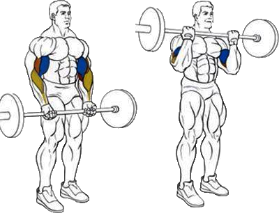

Cчитается одним из самых эффективных упражнений для наращивания объёма и силы бицепсов.
Исходное положение:
Взяться за гриф штанги на ширине плеч, хватом снизу.
Техника выполнения:
Поднять снаряд сокращением бицепсов.
Рекомендации:
Нужно следить за тем, чтобы локти не выносились вперед. Обычно, это происходит тогда, когда атлет пытается поднять штангу повыше. Этого делать не стоит, так как нагрузка будет переходить с бицепса на дельту.